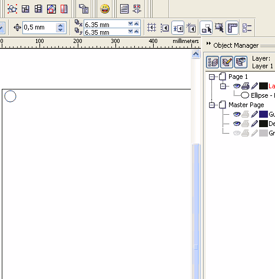

Есть ли возможность группировки по разным признакам?
Эйяфьятлайокудль / 29.08.2015, 00:40
Форум:
Здраствуйте уважаемые..
Со слоями знаком..
Но есть необходимость в группировке по разным признакам
Поясню: 500+ разноцветных объектов
иногда нужно выделить/скопировать объекты одного цвета.. иногда - объекты в верхнем левом углу..
поиск по признакам не предлагать, не подходит
есть в CD такая возможность?
таких возможностей - именно для выделения объектов в верхнем левом углу - в CorelDraw нет, только вручную. Выделить объекты одного цвета, а также по типу или размерам можно макросами, погуглите "SelectSame"
речь конечно нео том, чтобы выделить группу объектов в верхнем углу.. я о том, чтобы (типа как в базе данных access) распределить объекты по признакам и можно было управлять такими группами "в один клик" (выделить красные, выделить квадраты, выделить группу в верхнем левом углу)
спасибо
извините, русская языка ваш родной? что значит группировка по признакам? в кореле есть просто группировка в обьект "группа" для упрощения обращения с ним.
судя по тексту, вам нужно "выделение" - чем вас не устраивает мастер выбора объектов (Ctrl+F) по куче настраиваемых параметров?
перечислите что именно вам надо выделять, по цвету и по типу он прекрасно ищет.
mmgs прав. Но так, как Вы хотите, чтобы в один клик.... В зависимости от ситуации, можно применить стили и выделять объекты по имени стиля, тогда может будет быстрее, чем через Поиск.
спасибо за инфу буду "переваривать".. со стилями не сталкивался, разберусь
нет ребята все не так.. все не так ребята
из чего заключаю о нерешабельности поставленной задачи..
ps вдогонку еще раз условия задачи, поясню на примере.. вдруг у кого идеи
1. много одинаковых правильно расположенных объектов..
2. группировать, объединять нельзя т.к. мои макросы не обрабатывают сгруппированные объекты
3. много часто и попеременно произвожу манипуляции (выделяю, обрабатываю макросами, меняю цвета заливки и абриса, копирую, экспортирую) с группами объектов, заключенными в цветные рамки (рамки не являются объектами - только для иллюстрации границ группы)
4. если бы рамки не "пересекались" - нетпроблем - разношу группы объектов по слоям и работаю с содержимым каждого слоя
таким образом, некоторые объекты принадлежат к разным группам и вопрос в том, есть ли возможность автоматического выделения групп, ограниченных цветными рамками
всё решаемо 
ого.. на такіх глыбінях ведау толькі вялікія рыбы сустракаюцца.. дзякуй за падказку